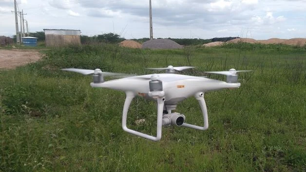
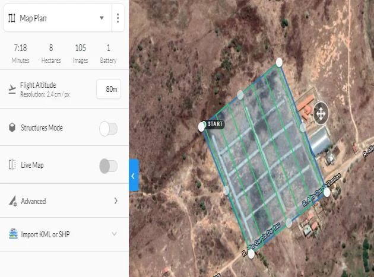

Jorge Luis de Oliveira Pinto Filho 2A B C D EProfessor adjunto, Universidade Federal Rural do Semi-Árido, Pau dos Ferros, Rio Grande do Norte, Brasil. E-mail:jorge.filho@ufersa.edu.br
Mozar Leite de Araújo Lima A B C D EUniversidade Federal Rural do Semi-Árido, Pau dos Ferros, Rio Grande do Norte, Brasil. E-mail:mozar_dm@hotmail.com
Hermínio Sabino de Oliveira Junior A B C D EUniversidade Federal do Rio Grande do Norte, Natal, Rio Grande do Norte, Brasil. E-mail:herminiosabino@gmail.com

Apresentação do artigo que investiga os loteamentos de Pau dos Ferros-RN por meio de análise documental, trabalho de campo, aerofotogrametria com VANT e processamento em ambiente SIG.
O artigo analisa a expansão urbana por loteamentos em Pau dos Ferros-RN, articulando desenvolvimento urbano, legalidade ambiental, infraestrutura básica e geotecnologias. A pesquisa parte do problema de que loteamentos implantados sem planejamento podem gerar ruas sem padronização, ausência de saneamento, fragilidade ambiental e conflitos de registro.
Metodologicamente, o trabalho combinou investigação documental em órgãos municipais e cartório, visitas de campo, planejamento de voo com DroneDeploy, aquisição de imagens com DJI Phantom 4, processamento fotogramétrico e vetorização no QGIS.
Os resultados revelaram 23 loteamentos registrados na SEMUT e/ou no Cartório local, forte concentração no bairro Chico Cajá, baixa regularidade ambiental, infraestrutura incompleta e potencial do VANT para gerar dados reais, recentes e de baixo custo para gestão pública.
A pesquisa cruza dados oficiais, campo e imagens aéreas para comparar a cidade legal com a cidade observada.

Loteamentos urbanos de Pau dos Ferros-RN, tratados como forma contemporânea de expansão urbana.
Consulta à SEMUT, SEINFRA, SEMA e Cartório de Registro de Imóveis para localizar, caracterizar e verificar registros.
Criação de polígonos no DroneDeploy, definição de altura, velocidade, sobreposição e número estimado de imagens.
DroneDeployVoos com DJI Phantom 4, observando obstáculos, bateria e segurança operacional.
Geração de nuvem de pontos, MDE, ortomosaico, conversão para GeoTIFF e vetorização no QGIS.
Comparação entre registros, infraestrutura, licenciamento, vias, quadras, lotes e padrão de ocupação.
Síntese dos dados apresentados no artigo transformado em gráficos.
Apenas três loteamentos aparecem com licença ambiental no levantamento documental.
Tabela organizada a partir do Quadro 1 do artigo.
| Loteamento | Bairro | Área (ha) | Quadras | Lotes | Licença |
|---|
Fotos presentes no artigo de cada levantamento, processada no programa QGis para o tratamento e vetorização das imagens, sendo as figuras seguintes destacadas para a constituição do mosaico final.
O município poderia transformar ortomosaicos em rotina de fiscalização urbana? Como?
Quais dados deveriam estar obrigatoriamente integrados em uma base municipal georreferenciada?
A baixa presença de licenciamento ambiental indica falha do empreendedor, do Estado ou de ambos?
Como drones podem apoiar planejamento participativo sem substituir análise social e jurídica?
PINTO FILHO, Jorge Luis de Oliveira; LIMA, Mozar Leite de Araújo; OLIVEIRA JUNIOR, Hermínio Sabino de. Mapeamento aéreo com drone para planejamento urbano. Revista Políticas Públicas & Cidades, v. 9, n. 3, p. 1-20, out./dez. 2020.